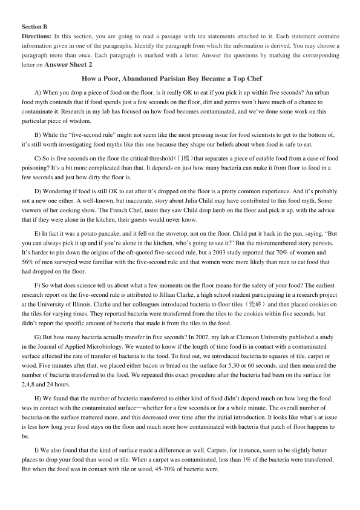
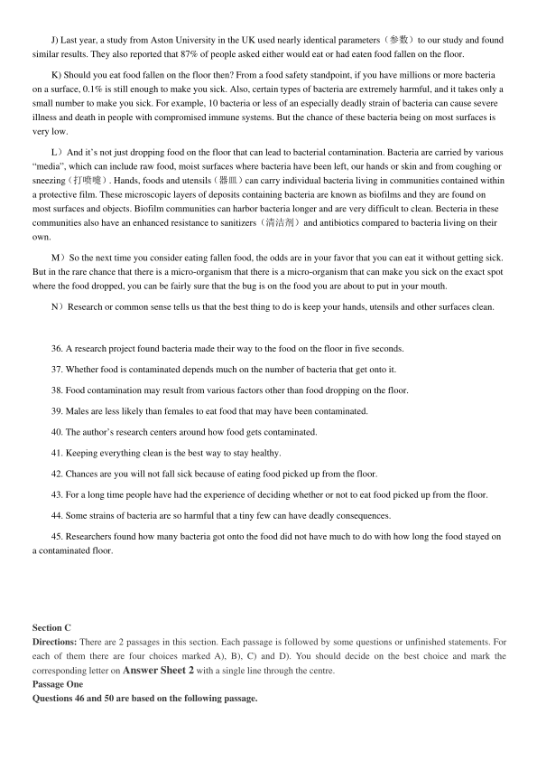
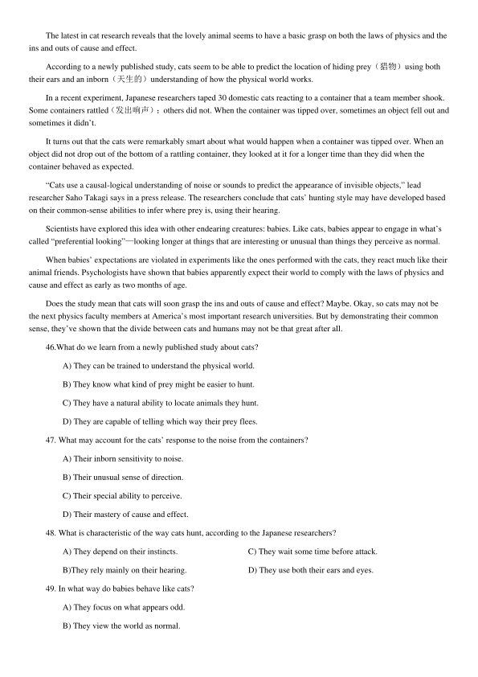
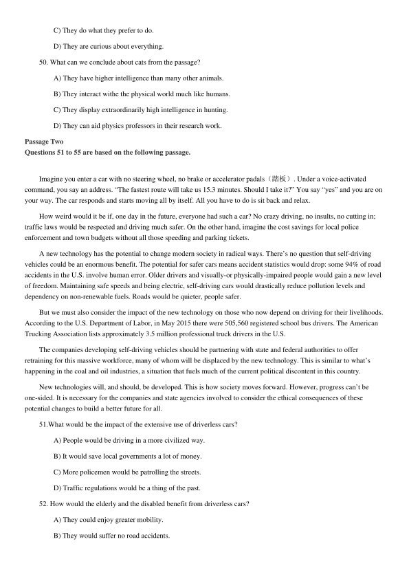
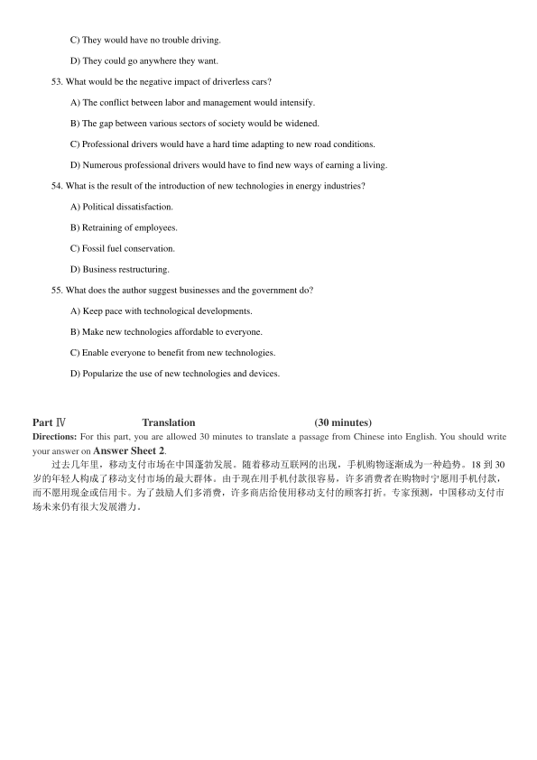

第 1 / 6 页

2018 年12 月大学英语四级考试真题（第3 套）
Part I
Writing
(30minutes)
Directions: For this part, you are allowed 30 minutes to write a short essay on the challenges of starting a career after
graduation. You should write at least120 words but no more than 180 words.
___________________________________________________________________________________________________
___________________________________________________________________________________________________
___________________________________________________________________________________________________
Part II
Listening Comprehension
(25 minutes)
说明：由于2018 年12 月四级考试全国共考了2 套听力，本套真题听力与前2 套内容完全一样，只是顺序不一
样，因此在本套真题中不再重复出现。
Part Ⅲ
Reading Comprehension
( 40 minutes )
Section A
Directions: In this section, there is a passage with ten blanks. You are required to select one word for each blank from a list
of choices given in a word bank following the passage. Read the passage through carefully before making your choices.
Each choice in the bank is identified by a letter. Please mark the corresponding letter for each item on Answer Sheet 2
with a single line through the centre. You may not use any of the words in the bank more than once.
Questions 26 to 35 are based on the following passage.
A few months ago, I was down with a terrible cold which ended in a persistent bad cough. No matter how many
different
26
I tried, I still couldn’t get rid of the cough. Not only did it
27
my teaching but also my life as a whole.
Then one day after class, a student came up to me and
28
traditional Chinese medicine. From her description, Chinese
medicine sounded as if it had magic power that worked wonders. I was
29
because I knew so little about it and have
never it before. Eventually, my cough got so much
30
that I couldn’t sleep at night, so I decided to give it a try. The
Chinese doctor took my pulse and asked to see my tongue, both of which were new
31
to me because they are both
non-existent in Western medicine. Then the doctor gave me a scraping（刮）treatment known as “Gua Sha”.
I was a little
32
at first because he used a smooth edged tool to scrape the skin on my neck and shoulders. A few minutes later, the
33
strokes started to produce a relieving effect and my body and mind began to
34
deeper into relaxation. I didn’t feel any
improvement in my condition in the first couple of days, but after a few more regular visits to the doctor, my cough started
to
35
. Then, within a matter of weeks, it was completely gone!
A) deepen
I)remedies
B) experiences
J) scared
C) hesitant
D) inconvenience
K) sensitive
E) lessen
L) sink
F) licenses
M) temporary
G)pressured
N) tremble
H) recommended
O) worse
查看 / 复制本页文字
2018 年12 月大学英语四级考试真题（第3 套） Part I Writing (30minutes) Directions: For this part, you are allowed 30 minutes to write a short essay on the challenges of starting a career after graduation. You should write at least120 words but no more than 180 words. ___________________________________________________________________________________________________ ___________________________________________________________________________________________________ ___________________________________________________________________________________________________ Part II Listening Comprehension (25 minutes) 说明：由于2018 年12 月四级考试全国共考了2 套听力，本套真题听力与前2 套内容完全一样，只是顺序不一 样，因此在本套真题中不再重复出现。 Part Ⅲ Reading Comprehension ( 40 minutes ) Section A Directions: In this section, there is a passage with ten blanks. You are required to select one word for each blank from a list of choices given in a word bank following the passage. Read the passage through carefully before making your choices. Each choice in the bank is identified by a letter. Please mark the corresponding letter for each item on Answer Sheet 2 with a single line through the centre. You may not use any of the words in the bank more than once. Questions 26 to 35 are based on the following passage. A few months ago, I was down with a terrible cold which ended in a persistent bad cough. No matter how many different 26 I tried, I still couldn’t get rid of the cough. Not only did it 27 my teaching but also my life as a whole. Then one day after class, a student came up to me and 28 traditional Chinese medicine. From her description, Chinese medicine sounded as if it had magic power that worked wonders. I was 29 because I knew so little about it and have never it before. Eventually, my cough got so much 30 that I couldn’t sleep at night, so I decided to give it a try. The Chinese doctor took my pulse and asked to see my tongue, both of which were new 31 to me because they are both non-existent in Western medicine. Then the doctor gave me a scraping（刮）treatment known as “Gua Sha”. I was a little 32 at first because he used a smooth edged tool to scrape the skin on my neck and shoulders. A few minutes later, the 33 strokes started to produce a relieving effect and my body and mind began to 34 deeper into relaxation. I didn’t feel any improvement in my condition in the first couple of days, but after a few more regular visits to the doctor, my cough started to 35 . Then, within a matter of weeks, it was completely gone! A) deepen I)remedies B) experiences J) scared C) hesitant D) inconvenience K) sensitive E) lessen L) sink F) licenses M) temporary G)pressured N) tremble H) recommended O) worse
第 2 / 6 页

Section B
Directions: In this section, you are going to read a passage with ten statements attached to it. Each statement contains
information given in one of the paragraphs. Identify the paragraph from which the information is derived. You may choose a
paragraph more than once. Each paragraph is marked with a letter. Answer the questions by marking the corresponding
letter on Answer Sheet 2.
How a Poor, Abandoned Parisian Boy Became a Top Chef
A) When you drop a piece of food on the floor, is it really OK to eat if you pick it up within five seconds? An urban
food myth contends that if food spends just a few seconds on the floor, dirt and germs won’t have much of a chance to
contaminate it. Research in my lab has focused on how food becomes contaminated, and we’ve done some work on this
particular piece of wisdom.
B) While the “five-second rule” might not seem like the most pressing issue for food scientists to get to the bottom of,
it’s still worth investigating food myths like this one because they shape our beliefs about when food is safe to eat.
C) So is five seconds on the floor the critical threshold（门槛）that separates a piece of eatable food from a case of food
poisoning? It’s a bit more complicated than that. It depends on just how many bacteria can make it from floor to food in a
few seconds and just how dirty the floor is.
D) Wondering if food is still OK to eat after it’s dropped on the floor is a pretty common experience. And it’s probably
not a new one either. A well-known, but inaccurate, story about Julia Child may have contributed to this food myth. Some
viewers of her cooking show, The French Chef, insist they saw Child drop lamb on the floor and pick it up, with the advice
that if they were alone in the kitchen, their guests would never know.
E) In fact it was a potato pancake, and it fell on the stovetop, not on the floor. Child put it back in the pan, saying, “But
you can always pick it up and if you’re alone in the kitchen, who’s going to see it?” But the misremembered story persists.
It’s harder to pin down the origins of the oft-quoted five-second rule, but a 2003 study reported that 70% of women and
56% of men surveyed were familiar with the five-second rule and that women were more likely than men to eat food that
had dropped on the floor.
F) So what does science tell us about what a few moments on the floor means for the safety of your food? The earliest
research report on the five-second rule is attributed to Jillian Clarke, a high school student participating in a research project
at the University of Illinois. Clarke and her colleagues introduced bacteria to floor tiles（瓷砖）and then placed cookies on
the tiles for varying times. They reported bacteria were transferred from the tiles to the cookies within five seconds, but
didn’t report the specific amount of bacteria that made it from the tiles to the food.
G) But how many bacteria actually transfer in five seconds? In 2007, my lab at Clemson University published a study
in the Journal of Applied Microbiology. We wanted to know if the length of time food is in contact with a contaminated
surface affected the rate of transfer of bacteria to the food. To find out, we introduced bacteria to squares of tile, carpet or
wood. Five minutes after that, we placed either bacon or bread on the surface for 5,30 or 60 seconds, and then measured the
number of bacteria transferred to the food. We repeated this exact procedure after the bacteria had been on the surface for
2,4,8 and 24 hours.
H) We found that the number of bacteria transferred to either kind of food didn’t depend much on how long the food
was in contact with the contaminated surface—whether for a few seconds or for a whole minute. The overall number of
bacteria on the surface mattered more, and this decreased over time after the initial introduction. It looks like what’s at issue
is less how long your food stays on the floor and much more how contaminated with bacteria that patch of floor happens to
be.
I) We also found that the kind of surface made a difference as well. Carpets, for instance, seem to be slightly better
places to drop your food than wood or tile. When a carpet was contaminated, less than 1% of the bacteria were transferred.
But when the food was in contact with tile or wood, 45-70% of bacteria were.
查看 / 复制本页文字
Section B Directions: In this section, you are going to read a passage with ten statements attached to it. Each statement contains information given in one of the paragraphs. Identify the paragraph from which the information is derived. You may choose a paragraph more than once. Each paragraph is marked with a letter. Answer the questions by marking the corresponding letter on Answer Sheet 2. How a Poor, Abandoned Parisian Boy Became a Top Chef A) When you drop a piece of food on the floor, is it really OK to eat if you pick it up within five seconds? An urban food myth contends that if food spends just a few seconds on the floor, dirt and germs won’t have much of a chance to contaminate it. Research in my lab has focused on how food becomes contaminated, and we’ve done some work on this particular piece of wisdom. B) While the “five-second rule” might not seem like the most pressing issue for food scientists to get to the bottom of, it’s still worth investigating food myths like this one because they shape our beliefs about when food is safe to eat. C) So is five seconds on the floor the critical threshold（门槛）that separates a piece of eatable food from a case of food poisoning? It’s a bit more complicated than that. It depends on just how many bacteria can make it from floor to food in a few seconds and just how dirty the floor is. D) Wondering if food is still OK to eat after it’s dropped on the floor is a pretty common experience. And it’s probably not a new one either. A well-known, but inaccurate, story about Julia Child may have contributed to this food myth. Some viewers of her cooking show, The French Chef, insist they saw Child drop lamb on the floor and pick it up, with the advice that if they were alone in the kitchen, their guests would never know. E) In fact it was a potato pancake, and it fell on the stovetop, not on the floor. Child put it back in the pan, saying, “But you can always pick it up and if you’re alone in the kitchen, who’s going to see it?” But the misremembered story persists. It’s harder to pin down the origins of the oft-quoted five-second rule, but a 2003 study reported that 70% of women and 56% of men surveyed were familiar with the five-second rule and that women were more likely than men to eat food that had dropped on the floor. F) So what does science tell us about what a few moments on the floor means for the safety of your food? The earliest research report on the five-second rule is attributed to Jillian Clarke, a high school student participating in a research project at the University of Illinois. Clarke and her colleagues introduced bacteria to floor tiles（瓷砖）and then placed cookies on the tiles for varying times. They reported bacteria were transferred from the tiles to the cookies within five seconds, but didn’t report the specific amount of bacteria that made it from the tiles to the food. G) But how many bacteria actually transfer in five seconds? In 2007, my lab at Clemson University published a study in the Journal of Applied Microbiology. We wanted to know if the length of time food is in contact with a contaminated surface affected the rate of transfer of bacteria to the food. To find out, we introduced bacteria to squares of tile, carpet or wood. Five minutes after that, we placed either bacon or bread on the surface for 5,30 or 60 seconds, and then measured the number of bacteria transferred to the food. We repeated this exact procedure after the bacteria had been on the surface for 2,4,8 and 24 hours. H) We found that the number of bacteria transferred to either kind of food didn’t depend much on how long the food was in contact with the contaminated surface—whether for a few seconds or for a whole minute. The overall number of bacteria on the surface mattered more, and this decreased over time after the initial introduction. It looks like what’s at issue is less how long your food stays on the floor and much more how contaminated with bacteria that patch of floor happens to be. I) We also found that the kind of surface made a difference as well. Carpets, for instance, seem to be slightly better places to drop your food than wood or tile. When a carpet was contaminated, less than 1% of the bacteria were transferred. But when the food was in contact with tile or wood, 45-70% of bacteria were.
第 3 / 6 页

J) Last year, a study from Aston University in the UK used nearly identical parameters（参数）to our study and found
similar results. They also reported that 87% of people asked either would eat or had eaten food fallen on the floor.
K) Should you eat food fallen on the floor then? From a food safety standpoint, if you have millions or more bacteria
on a surface, 0.1% is still enough to make you sick. Also, certain types of bacteria are extremely harmful, and it takes only a
small number to make you sick. For example, 10 bacteria or less of an especially deadly strain of bacteria can cause severe
illness and death in people with compromised immune systems. But the chance of these bacteria being on most surfaces is
very low.
L）And it’s not just dropping food on the floor that can lead to bacterial contamination. Bacteria are carried by various
“media”, which can include raw food, moist surfaces where bacteria have been left, our hands or skin and from coughing or
sneezing（打喷嚏）. Hands, foods and utensils（器皿）can carry individual bacteria living in communities contained within
a protective film. These microscopic layers of deposits containing bacteria are known as biofilms and they are found on
most surfaces and objects. Biofilm communities can harbor bacteria longer and are very difficult to clean. Becteria in these
communities also have an enhanced resistance to sanitizers（清洁剂）and antibiotics compared to bacteria living on their
own.
M）So the next time you consider eating fallen food, the odds are in your favor that you can eat it without getting sick.
But in the rare chance that there is a micro-organism that there is a micro-organism that can make you sick on the exact spot
where the food dropped, you can be fairly sure that the bug is on the food you are about to put in your mouth.
N）Research or common sense tells us that the best thing to do is keep your hands, utensils and other surfaces clean.
36. A research project found bacteria made their way to the food on the floor in five seconds.
37. Whether food is contaminated depends much on the number of bacteria that get onto it.
38. Food contamination may result from various factors other than food dropping on the floor.
39. Males are less likely than females to eat food that may have been contaminated.
40. The author’s research centers around how food gets contaminated.
41. Keeping everything clean is the best way to stay healthy.
42. Chances are you will not fall sick because of eating food picked up from the floor.
43. For a long time people have had the experience of deciding whether or not to eat food picked up from the floor.
44. Some strains of bacteria are so harmful that a tiny few can have deadly consequences.
45. Researchers found how many bacteria got onto the food did not have much to do with how long the food stayed on
a contaminated floor.
Section C
Directions: There are 2 passages in this section. Each passage is followed by some questions or unfinished statements. For
each of them there are four choices marked A), B), C) and D). You should decide on the best choice and mark the
corresponding letter on Answer Sheet 2 with a single line through the centre.
Passage One
Questions 46 and 50 are based on the following passage.
查看 / 复制本页文字
J) Last year, a study from Aston University in the UK used nearly identical parameters（参数）to our study and found similar results. They also reported that 87% of people asked either would eat or had eaten food fallen on the floor. K) Should you eat food fallen on the floor then? From a food safety standpoint, if you have millions or more bacteria on a surface, 0.1% is still enough to make you sick. Also, certain types of bacteria are extremely harmful, and it takes only a small number to make you sick. For example, 10 bacteria or less of an especially deadly strain of bacteria can cause severe illness and death in people with compromised immune systems. But the chance of these bacteria being on most surfaces is very low. L）And it’s not just dropping food on the floor that can lead to bacterial contamination. Bacteria are carried by various “media”, which can include raw food, moist surfaces where bacteria have been left, our hands or skin and from coughing or sneezing（打喷嚏）. Hands, foods and utensils（器皿）can carry individual bacteria living in communities contained within a protective film. These microscopic layers of deposits containing bacteria are known as biofilms and they are found on most surfaces and objects. Biofilm communities can harbor bacteria longer and are very difficult to clean. Becteria in these communities also have an enhanced resistance to sanitizers（清洁剂）and antibiotics compared to bacteria living on their own. M）So the next time you consider eating fallen food, the odds are in your favor that you can eat it without getting sick. But in the rare chance that there is a micro-organism that there is a micro-organism that can make you sick on the exact spot where the food dropped, you can be fairly sure that the bug is on the food you are about to put in your mouth. N）Research or common sense tells us that the best thing to do is keep your hands, utensils and other surfaces clean. 36. A research project found bacteria made their way to the food on the floor in five seconds. 37. Whether food is contaminated depends much on the number of bacteria that get onto it. 38. Food contamination may result from various factors other than food dropping on the floor. 39. Males are less likely than females to eat food that may have been contaminated. 40. The author’s research centers around how food gets contaminated. 41. Keeping everything clean is the best way to stay healthy. 42. Chances are you will not fall sick because of eating food picked up from the floor. 43. For a long time people have had the experience of deciding whether or not to eat food picked up from the floor. 44. Some strains of bacteria are so harmful that a tiny few can have deadly consequences. 45. Researchers found how many bacteria got onto the food did not have much to do with how long the food stayed on a contaminated floor. Section C Directions: There are 2 passages in this section. Each passage is followed by some questions or unfinished statements. For each of them there are four choices marked A), B), C) and D). You should decide on the best choice and mark the corresponding letter on Answer Sheet 2 with a single line through the centre. Passage One Questions 46 and 50 are based on the following passage.
第 4 / 6 页

The latest in cat research reveals that the lovely animal seems to have a basic grasp on both the laws of physics and the
ins and outs of cause and effect.
According to a newly published study, cats seem to be able to predict the location of hiding prey（猎物）using both
their ears and an inborn（天生的）understanding of how the physical world works.
In a recent experiment, Japanese researchers taped 30 domestic cats reacting to a container that a team member shook.
Some containers rattled（发出响声）；others did not. When the container was tipped over, sometimes an object fell out and
sometimes it didn’t.
It turns out that the cats were remarkably smart about what would happen when a container was tipped over. When an
object did not drop out of the bottom of a rattling container, they looked at it for a longer time than they did when the
container behaved as expected.
“Cats use a causal-logical understanding of noise or sounds to predict the appearance of invisible objects,” lead
researcher Saho Takagi says in a press release. The researchers conclude that cats’ hunting style may have developed based
on their common-sense abilities to infer where prey is, using their hearing.
Scientists have explored this idea with other endearing creatures: babies. Like cats, babies appear to engage in what’s
called “preferential looking”—looking longer at things that are interesting or unusual than things they perceive as normal.
When babies’ expectations are violated in experiments like the ones performed with the cats, they react much like their
animal friends. Psychologists have shown that babies apparently expect their world to comply with the laws of physics and
cause and effect as early as two months of age.
Does the study mean that cats will soon grasp the ins and outs of cause and effect? Maybe. Okay, so cats may not be
the next physics faculty members at America’s most important research universities. But by demonstrating their common
sense, they’ve shown that the divide between cats and humans may not be that great after all.
46.What do we learn from a newly published study about cats?
A) They can be trained to understand the physical world.
B) They know what kind of prey might be easier to hunt.
C) They have a natural ability to locate animals they hunt.
D) They are capable of telling which way their prey flees.
47. What may account for the cats’ response to the noise from the containers?
A) Their inborn sensitivity to noise.
B) Their unusual sense of direction.
C) Their special ability to perceive.
D) Their mastery of cause and effect.
48. What is characteristic of the way cats hunt, according to the Japanese researchers?
A) They depend on their instincts.
C) They wait some time before attack.
B)They rely mainly on their hearing.
D) They use both their ears and eyes.
49. In what way do babies behave like cats?
A) They focus on what appears odd.
B) They view the world as normal.
查看 / 复制本页文字
The latest in cat research reveals that the lovely animal seems to have a basic grasp on both the laws of physics and the ins and outs of cause and effect. According to a newly published study, cats seem to be able to predict the location of hiding prey（猎物）using both their ears and an inborn（天生的）understanding of how the physical world works. In a recent experiment, Japanese researchers taped 30 domestic cats reacting to a container that a team member shook. Some containers rattled（发出响声）；others did not. When the container was tipped over, sometimes an object fell out and sometimes it didn’t. It turns out that the cats were remarkably smart about what would happen when a container was tipped over. When an object did not drop out of the bottom of a rattling container, they looked at it for a longer time than they did when the container behaved as expected. “Cats use a causal-logical understanding of noise or sounds to predict the appearance of invisible objects,” lead researcher Saho Takagi says in a press release. The researchers conclude that cats’ hunting style may have developed based on their common-sense abilities to infer where prey is, using their hearing. Scientists have explored this idea with other endearing creatures: babies. Like cats, babies appear to engage in what’s called “preferential looking”—looking longer at things that are interesting or unusual than things they perceive as normal. When babies’ expectations are violated in experiments like the ones performed with the cats, they react much like their animal friends. Psychologists have shown that babies apparently expect their world to comply with the laws of physics and cause and effect as early as two months of age. Does the study mean that cats will soon grasp the ins and outs of cause and effect? Maybe. Okay, so cats may not be the next physics faculty members at America’s most important research universities. But by demonstrating their common sense, they’ve shown that the divide between cats and humans may not be that great after all. 46.What do we learn from a newly published study about cats? A) They can be trained to understand the physical world. B) They know what kind of prey might be easier to hunt. C) They have a natural ability to locate animals they hunt. D) They are capable of telling which way their prey flees. 47. What may account for the cats’ response to the noise from the containers? A) Their inborn sensitivity to noise. B) Their unusual sense of direction. C) Their special ability to perceive. D) Their mastery of cause and effect. 48. What is characteristic of the way cats hunt, according to the Japanese researchers? A) They depend on their instincts. C) They wait some time before attack. B)They rely mainly on their hearing. D) They use both their ears and eyes. 49. In what way do babies behave like cats? A) They focus on what appears odd. B) They view the world as normal.
第 5 / 6 页

C) They do what they prefer to do.
D) They are curious about everything.
50. What can we conclude about cats from the passage?
A) They have higher intelligence than many other animals.
B) They interact withe the physical world much like humans.
C) They display extraordinarily high intelligence in hunting.
D) They can aid physics professors in their research work.
Passage Two
Questions 51 to 55 are based on the following passage.
Imagine you enter a car with no steering wheel, no brake or accelerator padals（踏板）. Under a voice-activated
command, you say an address. “The fastest route will take us 15.3 minutes. Should I take it?” You say “yes” and you are on
your way. The car responds and starts moving all by itself. All you have to do is sit back and relax.
How weird would it be if, one day in the future, everyone had such a car? No crazy driving, no insults, no cutting in;
traffic laws would be respected and driving much safer. On the other hand, imagine the cost savings for local police
enforcement and town budgets without all those speeding and parking tickets.
A new technology has the potential to change modern society in radical ways. There’s no question that self-driving
vehicles could be an enormous benefit. The potential for safer cars means accident statistics would drop: some 94% of road
accidents in the U.S. involve human error. Older drivers and visually-or physically-impaired people would gain a new level
of freedom. Maintaining safe speeds and being electric, self-driving cars would drastically reduce pollution levels and
dependency on non-renewable fuels. Roads would be quieter, people safer.
But we must also consider the impact of the new technology on those who now depend on driving for their livelihoods.
According to the U.S. Department of Labor, in May 2015 there were 505,560 registered school bus drivers. The American
Trucking Association lists approximately 3.5 million professional truck drivers in the U.S.
The companies developing self-driving vehicles should be partnering with state and federal authorities to offer
retraining for this massive workforce, many of whom will be displaced by the new technology. This is similar to what’s
happening in the coal and oil industries, a situation that fuels much of the current political discontent in this country.
New technologies will, and should, be developed. This is how society moves forward. However, progress can’t be
one-sided. It is necessary for the companies and state agencies involved to consider the ethical consequences of these
potential changes to build a better future for all.
51.What would be the impact of the extensive use of driverless cars?
A) People would be driving in a more civilized way.
B) It would save local governments a lot of money.
C) More policemen would be patrolling the streets.
D) Traffic regulations would be a thing of the past.
52. How would the elderly and the disabled benefit from driverless cars?
A) They could enjoy greater mobility.
B) They would suffer no road accidents.
查看 / 复制本页文字
C) They do what they prefer to do. D) They are curious about everything. 50. What can we conclude about cats from the passage? A) They have higher intelligence than many other animals. B) They interact withe the physical world much like humans. C) They display extraordinarily high intelligence in hunting. D) They can aid physics professors in their research work. Passage Two Questions 51 to 55 are based on the following passage. Imagine you enter a car with no steering wheel, no brake or accelerator padals（踏板）. Under a voice-activated command, you say an address. “The fastest route will take us 15.3 minutes. Should I take it?” You say “yes” and you are on your way. The car responds and starts moving all by itself. All you have to do is sit back and relax. How weird would it be if, one day in the future, everyone had such a car? No crazy driving, no insults, no cutting in; traffic laws would be respected and driving much safer. On the other hand, imagine the cost savings for local police enforcement and town budgets without all those speeding and parking tickets. A new technology has the potential to change modern society in radical ways. There’s no question that self-driving vehicles could be an enormous benefit. The potential for safer cars means accident statistics would drop: some 94% of road accidents in the U.S. involve human error. Older drivers and visually-or physically-impaired people would gain a new level of freedom. Maintaining safe speeds and being electric, self-driving cars would drastically reduce pollution levels and dependency on non-renewable fuels. Roads would be quieter, people safer. But we must also consider the impact of the new technology on those who now depend on driving for their livelihoods. According to the U.S. Department of Labor, in May 2015 there were 505,560 registered school bus drivers. The American Trucking Association lists approximately 3.5 million professional truck drivers in the U.S. The companies developing self-driving vehicles should be partnering with state and federal authorities to offer retraining for this massive workforce, many of whom will be displaced by the new technology. This is similar to what’s happening in the coal and oil industries, a situation that fuels much of the current political discontent in this country. New technologies will, and should, be developed. This is how society moves forward. However, progress can’t be one-sided. It is necessary for the companies and state agencies involved to consider the ethical consequences of these potential changes to build a better future for all. 51.What would be the impact of the extensive use of driverless cars? A) People would be driving in a more civilized way. B) It would save local governments a lot of money. C) More policemen would be patrolling the streets. D) Traffic regulations would be a thing of the past. 52. How would the elderly and the disabled benefit from driverless cars? A) They could enjoy greater mobility. B) They would suffer no road accidents.
第 6 / 6 页

C) They would have no trouble driving.
D) They could go anywhere they want.
53. What would be the negative impact of driverless cars?
A) The conflict between labor and management would intensify.
B) The gap between various sectors of society would be widened.
C) Professional drivers would have a hard time adapting to new road conditions.
D) Numerous professional drivers would have to find new ways of earning a living.
54. What is the result of the introduction of new technologies in energy industries?
A) Political dissatisfaction.
B) Retraining of employees.
C) Fossil fuel conservation.
D) Business restructuring.
55. What does the author suggest businesses and the government do?
A) Keep pace with technological developments.
B) Make new technologies affordable to everyone.
C) Enable everyone to benefit from new technologies.
D) Popularize the use of new technologies and devices.
Part Ⅳ
Translation
(30 minutes)
Directions: For this part, you are allowed 30 minutes to translate a passage from Chinese into English. You should write
your answer on Answer Sheet 2.
过去几年里，移动支付市场在中国蓬勃发展。随着移动互联网的出现，手机购物逐渐成为一种趋势。18 到30
岁的年轻人构成了移动支付市场的最大群体。由于现在用手机付款很容易，许多消费者在购物时宁愿用手机付款，
而不愿用现金或信用卡。为了鼓励人们多消费，许多商店给使用移动支付的顾客打折。专家预测，中国移动支付市
场未来仍有很大发展潜力。
查看 / 复制本页文字
C) They would have no trouble driving. D) They could go anywhere they want. 53. What would be the negative impact of driverless cars? A) The conflict between labor and management would intensify. B) The gap between various sectors of society would be widened. C) Professional drivers would have a hard time adapting to new road conditions. D) Numerous professional drivers would have to find new ways of earning a living. 54. What is the result of the introduction of new technologies in energy industries? A) Political dissatisfaction. B) Retraining of employees. C) Fossil fuel conservation. D) Business restructuring. 55. What does the author suggest businesses and the government do? A) Keep pace with technological developments. B) Make new technologies affordable to everyone. C) Enable everyone to benefit from new technologies. D) Popularize the use of new technologies and devices. Part Ⅳ Translation (30 minutes) Directions: For this part, you are allowed 30 minutes to translate a passage from Chinese into English. You should write your answer on Answer Sheet 2. 过去几年里，移动支付市场在中国蓬勃发展。随着移动互联网的出现，手机购物逐渐成为一种趋势。18 到30 岁的年轻人构成了移动支付市场的最大群体。由于现在用手机付款很容易，许多消费者在购物时宁愿用手机付款， 而不愿用现金或信用卡。为了鼓励人们多消费，许多商店给使用移动支付的顾客打折。专家预测，中国移动支付市 场未来仍有很大发展潜力。